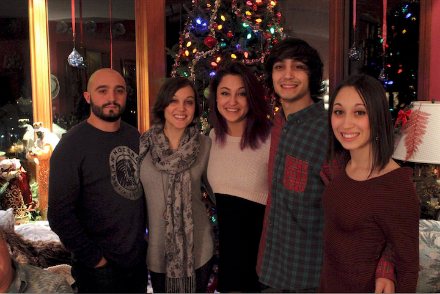

My name is Victoria Pizzo, and I'm from Marlboro, New Jersey. I am a second semester photography student with a minor in English. Growing up, I always loved stealing cameras away from the grown ups, but I didn't find my love for photography until my sophomore year of highschool.
I grew up in a relatively big family; I am the youngest of five kids with the oldest being twelve years older than me. We all have very different personalities, but growing up together was fun because I always had someone to be with.

I also have the most perfect dog in the world: Benji. We adopted him when I was in fifth grade, and he is my best friend in the world.
(I had to include two pictures because he's so perfect.)
I started dancing when I was four years old and I grew up with theater as a big part of my life. For the past five summers I worked as the dance counselor of a theater camp, and this will be the first year I do not return. Otherwise, my first job was at a children's party company where I went to people's houses dressed as princesses, mascot characters, pirates, etc. I will embarrass myself by including the link to the Facebook page here. After that, I worked at JCPenny Portrait Studios which I thought would help with my photography (spoiler alert it didn't). I worked there until I came to the wonderful FIT.